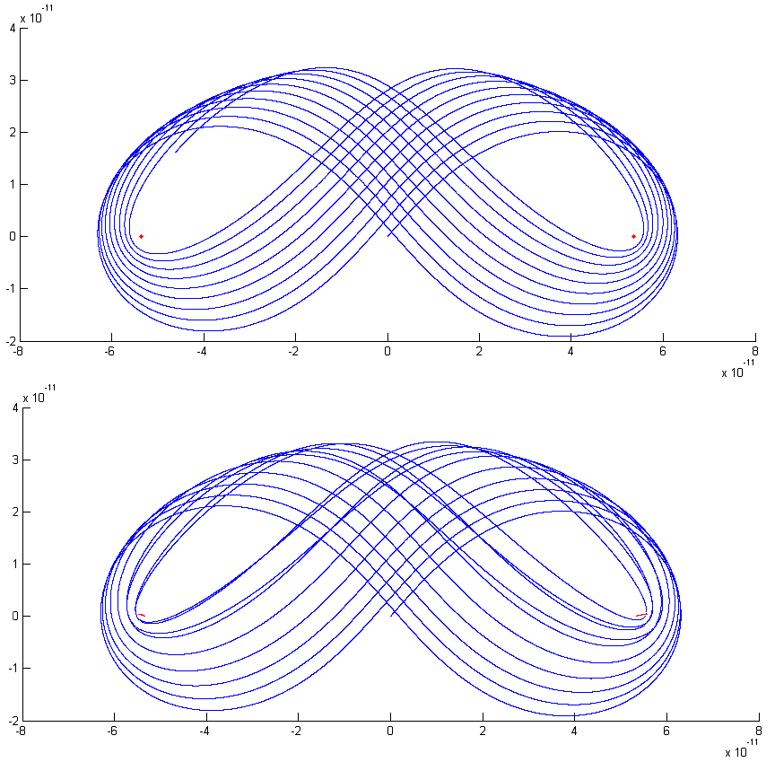

- used spreadsheets, such as Excel, to analyse data
- given presentations with PowerPoint
- analysed and visualised data using MATLAB
Matlab plots of electron (blue) orbits around protons (red) from a H2+ ion simulation. The top image is modelled with stationary protons and the bottom has moving protons.